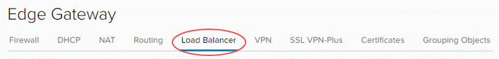
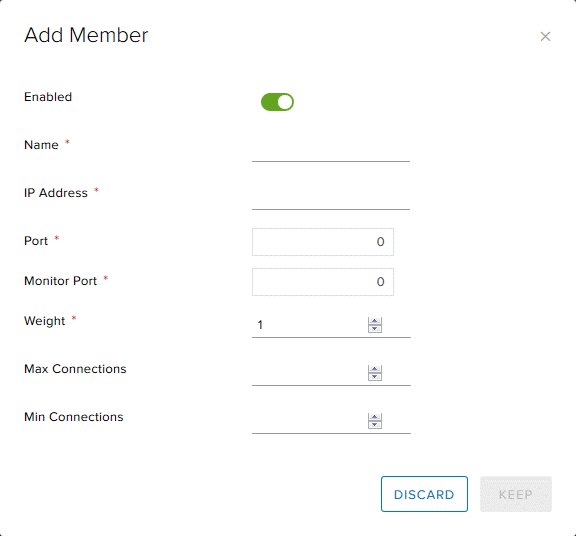
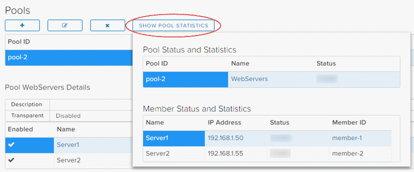
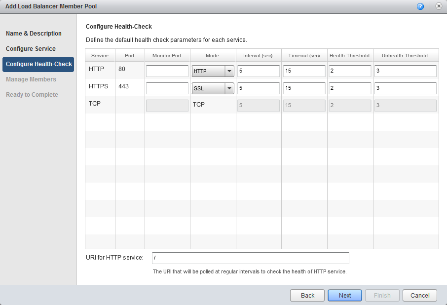
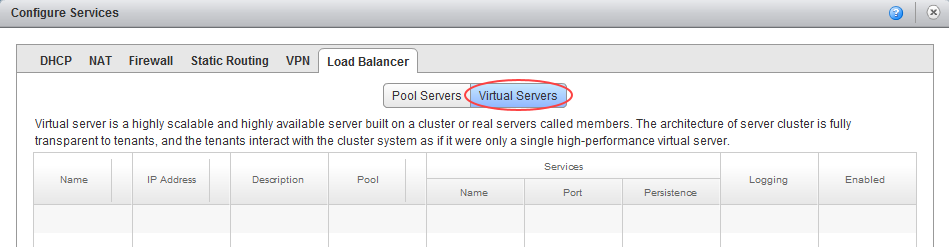
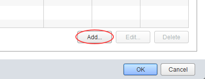
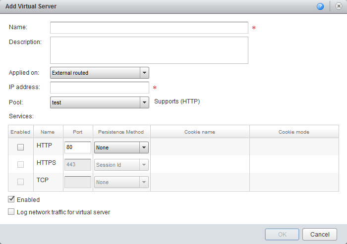

How to configure a load balancer
Overview
One of the functions of the edge gateway is to act as a basic layer 3 load balancer, distributing IP traffic to a pool of servers while appearing as a single virtual server. The load balancing methods offered are round-robin, IP hash, URI, HTTP header or least connected.
Bear in mind, however, that the edge gateway load balancer is quite basic. If you need to meet more complex requirements, you'll need provide your own third-party virtual load balancer.
The steps for configuring a load balancer vary depending on what type of edge gateway you're working with:
Note
We recommend that you convert your edge to an advanced gateway to access the latest vCloud Director functionality. For more information, see How to convert your edge to an advanced gateway.
Configuring a load balancer for an advanced gateway
To configure a load balancer for an advanced gateway:
In vCloud Director, access the edge gateway settings.
For more detailed instructions, see How to access edge gateway settings
Select the Load Balancer tab.

On the Global Configuration tab, select the Enabled toggle.
If you have a syslog server configured, select the Enable Logging toggle.
For more information about syslog servers, see How to access syslog data for your advanced gateway
Click Save changes.
You need to configure two components of the load balancing service for it to function correctly: pool servers and virtual servers.
Configuring a pool server for an advanced gateway
Pool servers are the real servers that will be masked by the load balancer.
Note
Before you configure the pool of servers, make a list of their IP addresses so that you can populate the pool later in the procedure.
Select the Pools tab.

Click the + button.

In the Add Pool dialog box, enter a Name and Description.
Note
The pool name should not include any spaces.
From the Algorithm list, select the load balancing algorithm to use.
From the Monitors list, select the monitors policy.
Select the Transparent toggle if you want IP addresses to be transparent.

In the Members section, click +.

In the Add Member dialog box, in the Name field, enter the server Name, IP Address, Port and Weight. When you're done, click Keep.

Add more pool members as required and when you're done, click Keep.
To view the status of pool members, click Show Pool Statistics.

Configuring a virtual server for an advanced gateway
A virtual server masks the pool of real servers and presents a single IP address.
Select the Virtual Servers tab.

Click the + button.

In the Add Virtual Server dialog box, select the Enable Virtual Server toggle.
Enter a Name for the virtual server, assign it a virtual IP Address, and assign it to the server pool you want to mask. You can also choose which services you want to apply to the virtual server. When you're done, click Keep.

Configuring a load balancer for a standard edge
Note
You can only manage advanced gateways in the new vCloud Director 9.1 tenant portal. If you're working with a standard edge gateway, you must first switch to the vCloud Director web console to manage the edge. For more information, see How to switch to the vCloud Director web console from the tenant portal.
To configure a load balancer for a standard edge:
In vCloud Director, click the Administration tab.

For more detailed instructions, see the Getting Started Guide for UKCloud for VMware
Double-click the virtual data centre (VDC) that you want to work with, or right-click the VDC and select Open.
Select the Edge Gateways tab.

Right-click the edge gateway and select Edge Gateway Services.
Select the Load Balancer tab.

You need to configure two components of the load balancing service for it to function correctly: pool servers and virtual servers.
Configuring a pool server for a standard edge
Pool servers are the real servers that will be masked by the load balancer.
Note
Before you configure the pool of servers, make a list of their IP addresses so that you can populate the pool later in the procedure.
On the Load Balancer tab, select the Pool Servers tab.

Click Add.

In the Add Load Balancer Member Pool wizard, give the pool a Name and Description then click Next.
Select the service type for the pool then click Next.
A service type consists of the protocol, port number and balancing method. You can enable multiple services for a pool.

Configure health check parameters for the services you're provisioning (or leave as the default), then click Next.

Click Add to add members to the pool.

In the Add Member dialog box, enter the IP addresses of one of the servers that you want to include in the pool. You can also give the servers different weightings to modify the flow of traffic to each one. You can then add service and monitoring port numbers.

When you're happy with the settings, click OK.
Click Add to add another server to the pool and when you've added all the servers, click Next.
On the last page of the wizard, review your settings and click Finish.
The pool you created will now be visible in the Pool Servers window.

Configuring a virtual server for a standard edge
A virtual server masks the pool of real servers and presents a single IP address.
On the Load Balancer tab, select the Virtual Servers tab.

Click Add.

In the Add Virtual Server dialog box, name the virtual server, assign a virtual IP address to it and assign it to the server pool you want to mask. You can also choose which services you want to apply to the virtual server.

When you're finished, click OK.
Next steps
In this article you've learned how to create firewall rules. For other edge gateway configuration tasks, see:
Feedback
If you find an issue with this article, click Improve this Doc to suggest a change. If you have an idea for how we could improve any of our services, visit UKCloud Ideas. Alternatively, you can contact us at products@ukcloud.com.